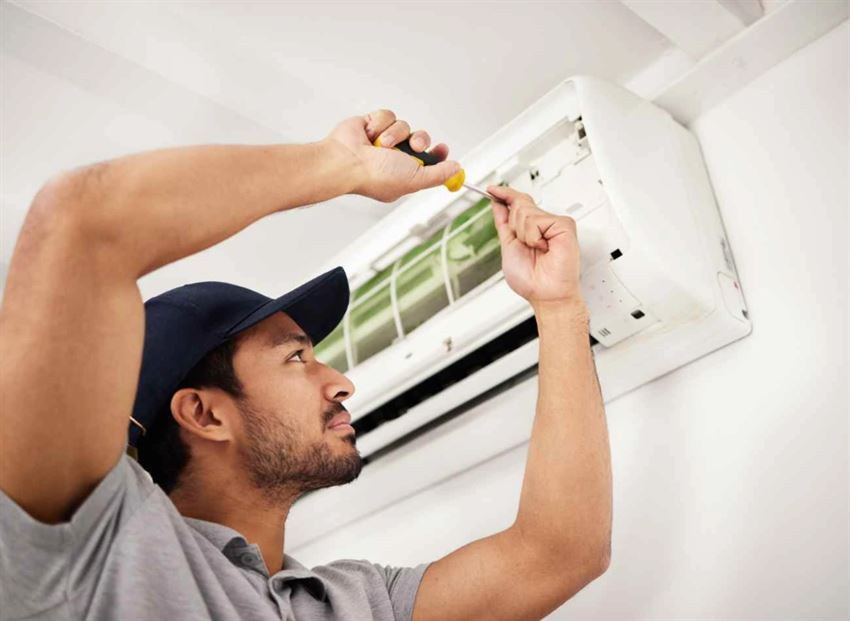

جنوب وغرب مكةقطاع الشوقية وبطحاء قريش والكعكية
استجابة فائقة السرعة خلال 15-20 دقيقة. تغطية شاملة لحي الشوقية، بطحاء قريش، الكعكية، وحي الهجرة بأحدث المعدات.
- حي الشوقية وبطحاء قريش
- حي الكعكية وحي الهجرة
- صيانة فورية للمكيفات والثلاجات والغسالات والنشافات